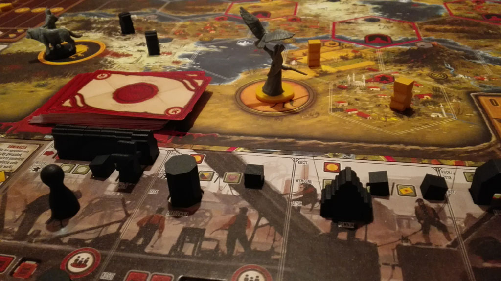

Scythe to strategiczna gra planszowa dla jednego do pięciu graczy, w której wcielisz się przywódcę
jednego z
narodów Europii Wschodniej w alternatywnej rzeczywistości lat 20. ubiegłego stulecia.
Będziesz odkrywał i podbijał kolejne terytoria. Będziesz werbował nowych rekrutów i gromadził
surowce. W
końcu
będziesz wysyłał do walki siejące postrach bojowe mechy, którymi zmiażdżysz innych graczy. A to
wszystko
dla
chwały, sławy i pieniędzy. Bowiem zwycięzcą gry zostanie gracz z największą liczbą zgromadzonych
monet.
Zdobędziesz ich tym więcej, im większa będzie twoja popularność, im bardziej rozwinięta będzie twoja
armia,
a
także im więcej terenów i zasobów znajdzie się pod Twoją kontrolą.
Scythe to gra idealnie łącząca ze sobą mechaniki znane z eurogier z mocno klimatyczną rozgrywką.
Zachwyci
zarówno graczy, którzy lubią rozwój, optymalizację i strategiczne planowanie, jak również tych,
którzy
cenią
w
grach wyraźną warstwę fabularną, elementy przygodowe, powiązanie zasad gry z tematem i ograniczenie
negatywnej
interakcji.
Scythe
Uniwersum
Popioły po Wielkiej Wojnie wciąż pokrywają całunem śnieg w Europii roku 1920. Kapitalistyczne
miasto-państwo
znane po prostu jako „Fabryka”, które było siłą napędową wojny dzięki produkowanym przez siebie mechom,
zatrzasnęło swe podwoje, co przyciągnęło uwagę kilku pobliskich krajów...
Na małym, choć niezwykle pożądanym terenie zebrali się przedstawiciele pięciu frakcji. Kto zyska chwałę
i
fortunę, tworząc swoje imperium jako przywódca Wschodniej Europii?
Czym jest Scythe?
Najbardziej oczekiwana gra 2016 roku
I to nie żadne przechwałki! W serwisie BoardGameGeek.com, skupiającym miłośników gier planszowych z całego świata, przeprowadzono plebiscyt na najbardziej oczekiwane gry 2016 roku. Znamienny tytuł najbardziej wyczekiwanej gry zdobyła właśnie gra Scythe. Zwyciężyła nie tylko w kategorii ogólnej, ale również wśród zapowiedzianych na ten rok gier strategicznych, ekonomicznych, tematycznych, science-fiction oraz w klimatach steampunkowych. Obok tej gry nie można przejść obojętnie!
Nowatorska mechanika
Scythe to bez wątpienia innowacyjna i dopracowana mechanicznie gra. Wykorzystuje ona zasadę ciągłego wyboru akcji, co oznacza, że po wykonaniu akcji przez jednego gracza, od razu przychodzi kolej następnego, dzięki czemu nie ma przestojów podczas oczekiwania na swoją kolejkę. W grze wprowadzono również takie nowinki jak przynależność zasobów do terenu, a co za tym idzie - do gracza kontrolującego w danej chwili teren, a także podwójną korzyść z rozwoju - jednoczesny wzrost efektywności wykonywanych akcji i obniżenie ich kosztu. Gracze dowodzą w grze frakcjami o wyraźnie odmiennych zdolnościach i stylu gry. Ich asymetrię i różnorodność, a zarazem regrywalność, zwiększa dodatkowo losowy dobór planszy frakcji i planszy gracza. Karty spotkań stawiają przed graczami zawsze 3 możliwe sposoby realizacji swoich działań. Każda rozgrywka będzie odmienna i niepowtarzalna.